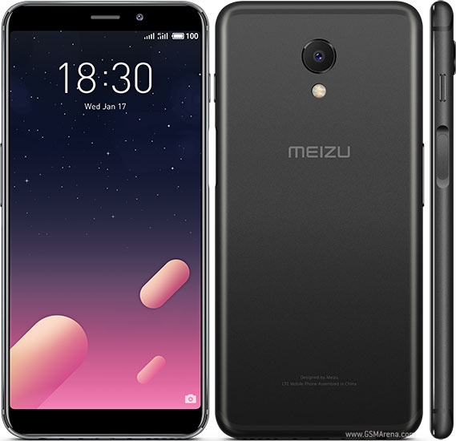
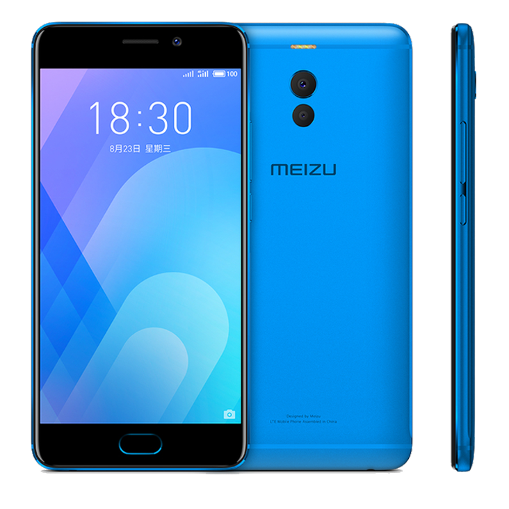

Meizu
M6s
4500 грн
Meizu M6S-очередное обновление бюджетной линейки серии M от Meizu, но уже с существенными изменениями, как внешне, так и внутренне.
Выполнен смарфтон по новым тенденциям рынка и имеет безрамочный дизайн и дисплей нового поколения. Задняя крышка металлическая с пластиковыми вставками для лучшего приёма сигнала сети. Кнопки управления наэкранные, т.к. места для них под дисплеем не осталось. На правой боковой грани расположился сканер отпечатка пальцев и кнопка включения, на левой - качелька громкости.
M6 Note
5200 грн
Поклонники бренда Meizu давно ждали выхода модели на процессоре от Qualcomm и их ожидания оправдались выходом новой модели Meizu M6 Note.
Смартфон выпускается в модификации памяти с 3 и 4Гб оперативной памяти LPDDR3, а также с 16, 32 и 64Гб встроенной.